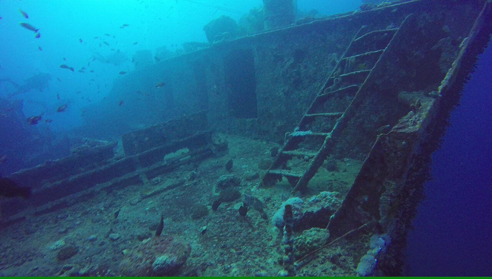

Épave du Thistlegorm
Mer Rouge, Égypte · plongée

Cargo britannique coulé en 1941, l'une des plus belles épaves du monde : motos, camions et wagons figés sous l'eau.
- Lieu
- Mer Rouge, Égypte
- Niveau
- Expert
- Activités
- plongée
- Type d'eau
- Mer / océan
- Coordonnées
- 27.81, 33.92 (position approximative du secteur)
Dangers à connaître
- Pénétration d'épave réservée aux confirmés.
- Courant et profondeur (~30 m).
Le conseil d'Ocean Buddy
Formation plongée épave (wreck) fortement recommandée.
Ouvrir dans Ocean Buddy Télécharger sur l'App Store
Source : Description historique Ocean Buddy · vérification externe en attente.